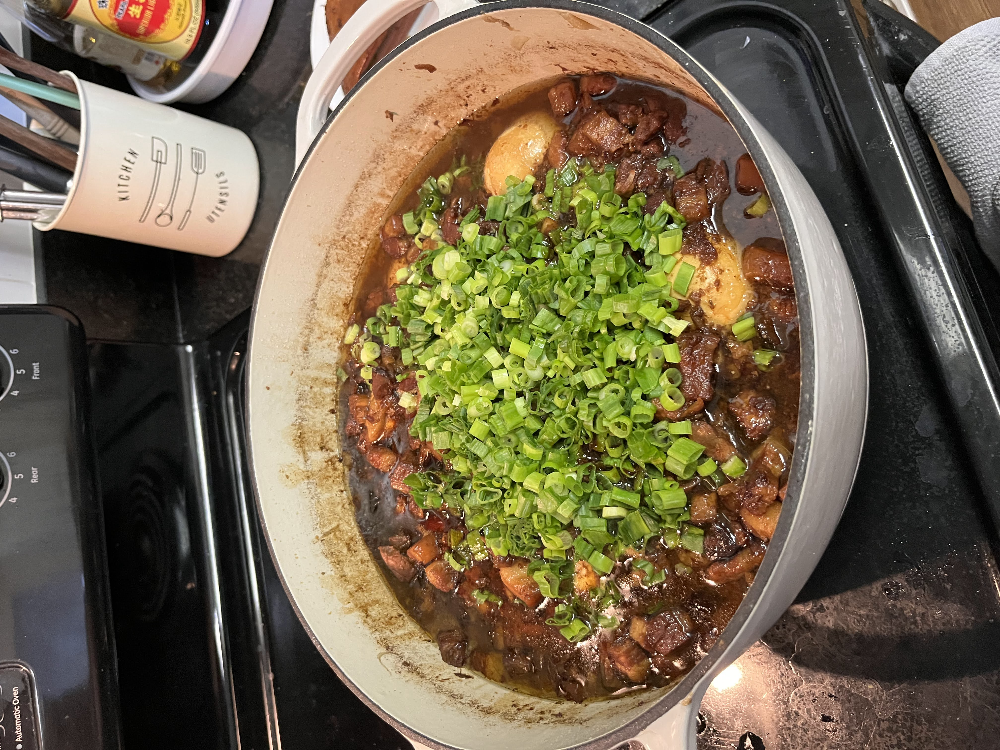

Lu Rou Fan (Taiwanese Braised Pork Belly)

This is my take on Lu Rou Fan, a Taiwanese braised pork belly dish.
It takes a bit of time to make the broth and to braise, but it is so worth it! It's best to cook in a large portion since it takes a long time to cook!
Servings:10-12
Ingredients
Pork
- 6lb pork belly
- 2Tbs minced garlic
- 1Tbs ginger
Sauce Group 1
- 3 star anise
- 1 cinnamon stick
- 3 bay leaves
- 1.5tsp five spice
- 1/2 cup rock sugar
- 1/2 cup light soy sauce
- 1/2 cup dark soy sauce
- 1 cup xiao xing wine
Sauce Group 2
- 1/2 cup shallot sauce
- 1/2 cup fried shallots
Broth
- 1Tbs dried shrimp
- 10 dried mushrooms
- 1 piece kalp
- Bonito soup base (optional)